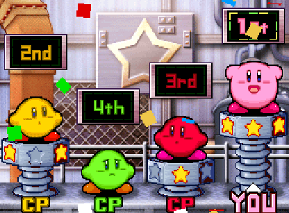

Kirby is a beloved video game character and the titular protagonist of the Kirby series, developed by HAL Laboratory and published by Nintendo. Since his debut in 1992, Kirby has become one of Nintendo's most iconic and enduring characters, known for his adorable appearance, cheerful demeanor, and unique gameplay mechanics.
Character Description
Kirby is a small, round creature with a pink body, stubby arms, and large expressive eyes. He is a resident of the peaceful planet Popstar and is often called upon to defend it from various threats. Kirby's defining ability is his capacity to inhale enemies and objects, copying their abilities or using them as projectiles. This mechanic is central to the gameplay of the series and sets Kirby apart from other video game protagonists.
Key Traits
-

- Color: pink (though he has been depicted in other colors in multiplayer modes or power-up states)
- Signature Ability: Inhalation and copy abilities.
- Personality: Cheerful, brave, and determined.
🧠 Kirby Quiz
What is Kirby's signature ability?
Game Statistics
Below is a table displaying some key game statistics:
| Game Title | Year Released | Platform |
|---|---|---|
| Kirby's Dream Land | 1992 | Game Boy |
| Kirby's Adventure | 1993 | NES |
| Kirby Super Star | 1996 | SNES |
| Kirby's Epic Yarn | 2010 | Wii |
| Kirby Planet Robobot | 2016 | Nintendo 3DS |
| Kirby and the Forgotten Land | 2022 | Nintendo Switch |